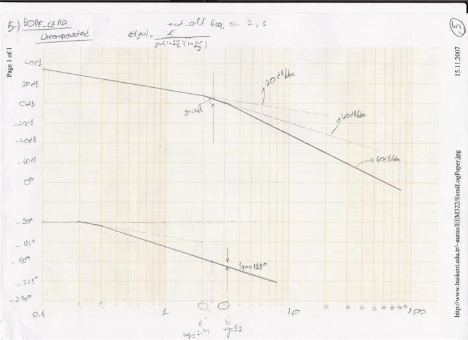

· EEM322
EEM322 Control Systems: EEM417 Compensator Design Homework and MATLAB Project (Uraz) – Student Solutions
EEM322 – Denetim Sistemleri · 15.11.2007 · 16.10.2026
This post brings together a compensator design homework found in the "Control" subfolder of the EEM322 Control Systems folder, along with the student solutions to it. The title of the homework sheet is "Başkent University: EEM417 Homework"; that is, the document belongs to the advanced control course that follows EEM322, but it is kept here because it was stored in the same folder. The homework was prepared by the course instructor, Prof. Dr. Alper Uraz. The folder contained the homework sheet, scanned handwritten solutions by two different students (one on a Bode paper dated 15.11.2007), one student's MATLAB output, and a solution fragment. The students' names do not appear in the documents. All the files can be downloaded as a ZIP at the end of the post.
Homework
1. For a unity-feedback system with open-loop transfer function
G(s) = K / [s(s + a)(s + b)]
where a ∈ [1, 3] and b ∈ [2, 10], design the compensator sets below:
| Set | Designs |
|---|---|
| A | 1, 2, 5, 6 |
| B | 1, 4, 5, 7 |
| C | 2, 3, 5, 6 |
| D | 3, 4, 5, 6 |
| E | 1, 2, 5, 7 |
| F | 1, 4, 5, 6 |
| G | 2, 3, 5, 7 |
Designs: 1 – RL-LEAD (lead compensator via root locus), 2 – RL-LAG (lag compensator via root locus), 3 – RL-PD, 4 – RL-PI, 5 – BODE-LEAD, 6 – BODE-LAG, 7 – BODE-PI. Required specifications (where applicable): ζ = 0.5, ωn = 4, Kv = 5 and pm = 40°.
2. (a) Sketch the root locus / Bode diagrams by hand, (b) find the unit step responses of the compensated and uncompensated systems.
3. MATLAB project: Provide MATLAB code for every step of the design in question 1; include all the plots of the uncompensated and compensated systems requested in question 2. Homework and MATLAB projects are due by Friday of week 11.
Each student was given a homework number; according to the number, a, b and the set are distributed in the table as follows: for numbers 1–8, a = 1.0; for 9–16, a = 1.2; for 17–24, a = 1.5; for 25–32, a = 1.8; for 33–36, a = 2.0; b increases by one in each group from 2 up to 9 (2, 3, 4, 5 for 33–36), and the sets cycle from A to G in order (1 → A, 2 → B, … 7 → G, 8 → A, …, 36 → A).
First student solution: a = 1, b = 2 (Set A)
The system is G(s) = K / [s(s + 1)(s + 2)] (homework no. 1, Set A: RL-LEAD, RL-LAG, BODE-LEAD, BODE-LAG). In every design, Kv = lim(s→0) sG(s) = K/2 = 5 ⇒ K = 10.
RL-LEAD
- Desired closed-loop poles: −ζωn ± jωn√(1 − ζ²) = −2 ± j4√0.75 = −2 ± j3.46.
- The solution computes the angle condition as −tan⁻¹(3.46/−2) − tan⁻¹(3.46/−1) − 90° = +60° + 74° − 90° = 44°.
- This 44° is split into two equal parts (22° + 22°) to place the zero and the pole: tan 8° = a/(2√3) ⇒ a = 0.48, tan 52° = b/(2√3) ⇒ b = 4.43.
- Result: 1/T = 2.48 (T = 0.403), 1/(aT) = 6.43, a = 0.38 ⇒ Gc(s) = (s + 2.48)/(s + 6.43).
Note: There is a sign error in the angle condition. At s = −2 + j3.46, the angles of the poles are 120° from 0, 106.1° from −1, and 90° from −2; the total phase is −316.1°, so the required angle contribution is 136° (not 44°). A deficiency this large cannot be supplied by a single-stage lead compensator; the designed (s + 2.48)/(s + 6.43) adds only about 44°.
BODE-LEAD
- From the plots, gm = 10 dB and pm = 27° were read. The required additional phase is 40° − 27° = 13°; with a 5° safety margin, φm = 18°.
- sin 18° = (1 − a)/(1 + a) = 0.309 ⇒ a = 0.53; 10 log a = −2.75 dB ⇒ ωm = 2.72 rad/s.
- 1/T = √a·ωm = 1.98, 1/(aT) = 3.74 ⇒ Gc(s) = a(1 + Ts)/(1 + aTs) = 0.53(1 + 0.5s)/(1 + 0.265s) = (s + 2)/(s + 3.7).
- The new phase margin is computed at ωm = 2.72: pm′ = 180° − 90° − 69.8° − 36.3° = −16.1°; the amplifier gain is Kc = 1/a = 1.89.
Note: With K = 10 the system is already unstable: for s³ + 3s² + 2s + K the critical gain is 6. By exact calculation the phase crossover frequency is √2 rad/s, the gain margin is ≈ −4.4 dB, and the phase margin is negative; the reading "gm = 10 dB, pm = 27°" is wrong. The solution's own result pm′ = −16.1° also shows that a single lead compensator cannot meet these specifications.
BODE-LAG
- G(s) = 10/[s(s + 1)(s + 2)] = 5/[s(1 + s)(1 + s/2)], 20 log 5 = 13.9 dB.
- pm = 40° + 5° (safety) = 45°. At ωg′ = 0.45 rad/s, 21 dB of attenuation is needed ⇒ b = 10^(21/20) = 11.2.
- 1/T = ωg′/10 = 0.045, 1/(bT) = 0.004 ⇒ Gc(s) = (1/11.2)(s + 0.045)/(s + 0.004).
- The solution writes the new phase margin as pm′ = 180° + tan⁻¹(ωg′/0.045) − tan⁻¹(ωg′/0.004) = 180° + 84.3° − 89.5° = 174.8°.
Note: The system's own phase must also be included in the new phase margin: at ωg′ = 0.45, ∠G = −90° − 24.2° − 12.7° = −126.9°, and the compensator's contribution is ≈ −5.2°; hence pm′ ≈ 180° − 126.9° − 5.2° ≈ 48° (which satisfies the required 40°).
Second student solution: a = 2, b = 3 (Set F)
The system is G(s) = K / [s(s + 2)(s + 3)] (Set F: RL-LEAD, RL-PI, BODE-LEAD, BODE-LAG). Kv = K/(2·3) = 5 ⇒ K = 30. The solution is annotated in Turkish; the Bode plot was drawn on 15.11.2007 on the semi-logarithmic paper (SemiLogPaper) from the course web page.
1) RL-LEAD
- Desired poles: −2 ± j2√3. Angle condition: θ = −(180° − 60°) − 90° − 73.9° = −283.9° ⇒ required angle φ = 103.9°.
- Using the bisector construction, the compensator zero is found as −0.6 and the pole as −26.6: C(s) = (s + 0.6)/(s + 26.6).
- Magnitude condition |Kc·G(s)·C(s)| = 1 (at s = −2 + j2√3) ⇒ Kc = 11.
4) RL-PI
A PI compensator was added to the compensated system obtained with RL-LEAD: Cpi(s) = Kp + Ki/s = Kp(s + Ki/Kp)/s. To keep the angle contribution small, the zero was chosen close to the origin (Ki/Kp = 0.1). From the magnitude condition, Kp = 4942.5/4862.095 ≈ 1.02 ⇒ Cpi(s) = 1.02(s + 0.1)/s.
5) BODE-LEAD
- G(jω) = 30/[jω(jω + 2)(jω + 3)] = 5/[jω(1 + jω/2)(1 + jω/3)], with corner frequencies 2 and 3.
- From the uncompensated Bode diagram, pm = 13.5° and gm = 4 dB were read.
- Step 1: φm = (40° − 13.5°) + 5° = 31.5°; sin φm = (1 − a)/(1 + a) = 0.52 ⇒ a = 0.32.
- Step 2: The frequency at which 10 log a = −5 dB, from the Bode diagram, is ωm = 3.8 rad/s.
- Step 3: 1/T = √a·ωm = 2.15, 1/(aT) = 6.72; C(s) = (s + 2.15)/(s + 6.72).
- Step 5: Kc = 1/a = 3.125 ⇒ Kc·C(s) = 3.125(s + 2.15)/(s + 6.72).
- Step 6: pm′ = 180° + ∠C(jωm)G(jωm) = 180° + 60.5° − 29.5° − 90° − 62.2° − 51.7° ⇒ pm′ = 7.1°.

Note: K = 30 equals the critical gain of this system (Routh for s³ + 5s² + 6s + K: K = 5·6 = 30); by exact calculation, the uncompensated system has pm = gm = 0 and a crossover frequency of √6 ≈ 2.45 rad/s. pm = 13.5° and gm = 4 dB were read from the asymptotic diagram. The resulting pm′ = 7.1° falls well short of the required 40°; that is, a single-stage lead compensator does not meet these specifications.
6) BODE-LAG
- pm′ = 40° + 5° = 45°; the frequency at which the phase on the Bode diagram is −135° was taken as the new gain crossover frequency: ωg′ = 0.72 rad/s. At this frequency, 16 dB was read from the magnitude diagram.
- 20 log b = 16 dB ⇒ b = 10^(16/20) = 6.3; 1/T = ωg′/10 = 0.073, 1/(bT) = 0.012.
- C(s) = (1/b)(s + 1/T)/(s + 1/(bT)) = 0.16(s + 0.073)/(s + 0.012).
Note: By exact calculation, the frequency at which the phase is −135° satisfies ω² + 5ω − 6 = 0, giving ω = 1 rad/s, where |G| ≈ 12.6 dB; 0.72 rad/s and 16 dB are values read from the asymptotic diagram (the asymptotic magnitude at 0.72 is 16.8 dB).
MATLAB output: a = 1.2, b = 2 (Set B)
A third student's MATLAB output, exported to Word, belongs to homework no. 9 (a = 1.2, b = 2, Set B: 1, 4, 5, 7). Kv = K/(1.2·2) = 5 ⇒ K = 12:
>> num=[0,0,0,12];
>> den=[1,3.2,2.4,0];
>> G=tf(num,den)
Transfer function:
12
---------------------
s^3 + 3.2 s^2 + 2.4 s
>> rlocus(G)
>> gridIn the root locus (the same plot appears in the 1-RL-lead and 4-RL-PI files), the real-axis poles at −1.2, −2 and 0 are marked. When the same system is plotted with bode(G) (files 5 and 7, both titled "Bode-Lead – Uncompensated"), MATLAB gives the following margins:
Gain Margin (dB): -3.88 At frequency (rad/sec): 1.55 Closed Loop Stable? No
Phase Margin (deg): -11.7 Delay Margin (sec): 3.17 At frequency (rad/sec): 1.92 Closed Loop Stable? NoThat is, with K = 12 the uncompensated closed loop is unstable (critical gain 3.2 × 2.4 = 7.68).
Solution fragment: Bode lead compensator
In the scan named "kontrol1", there is a section of a Bode-lead design for a different system, in the instructor's handwriting:
- Design specifications: pm = 45°, ess ≤ 0.4. ess = lim(s→0) sR(s)·1/(1 + G(s)) = 10/K = 0.4 ⇒ K = 25.
- From the plots, gm = 5 dB, pm = 14°, ωp = 3, ωg = 2.2. The required additional phase is 45° − 14° = 31°; adding 5° gives 36°.
- sin 36° = (1 − a)/(1 + a) = 0.6 ⇒ a = 0.25; 10 log a = −6 dB ⇒ ωm = 3.1 rad/s.
- 1/T = √a·ωm = 1.55, 1/(aT) = 6.2.
- Lead compensator: Gc(s) = a(1 + Ts)/(1 + aTs) = 0.25(1 + 0.65s)/(1 + 0.16s) = (s + 1.55)/(s + 6.2).
Note: sin 36° = 0.588; this gives a = (1 − 0.588)/(1 + 0.588) ≈ 0.26, so the 0.6 and 0.25 in the solution are rounded values.